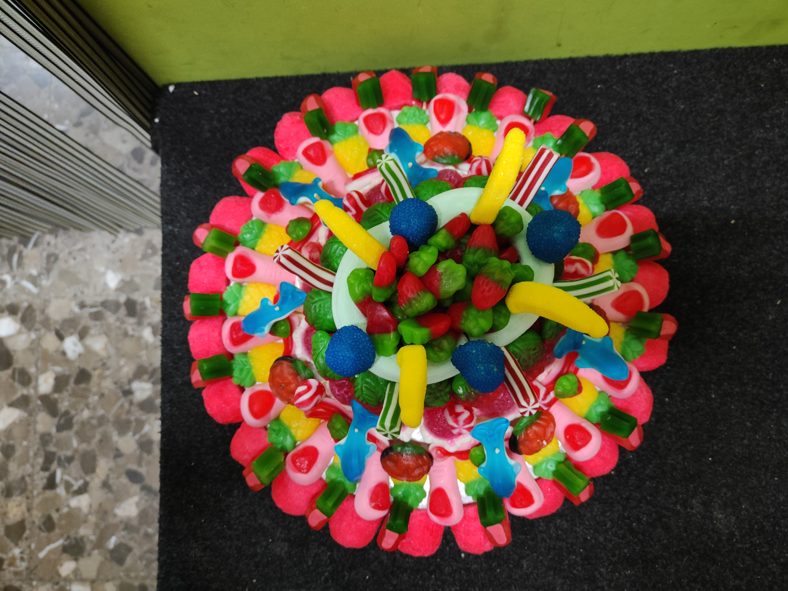
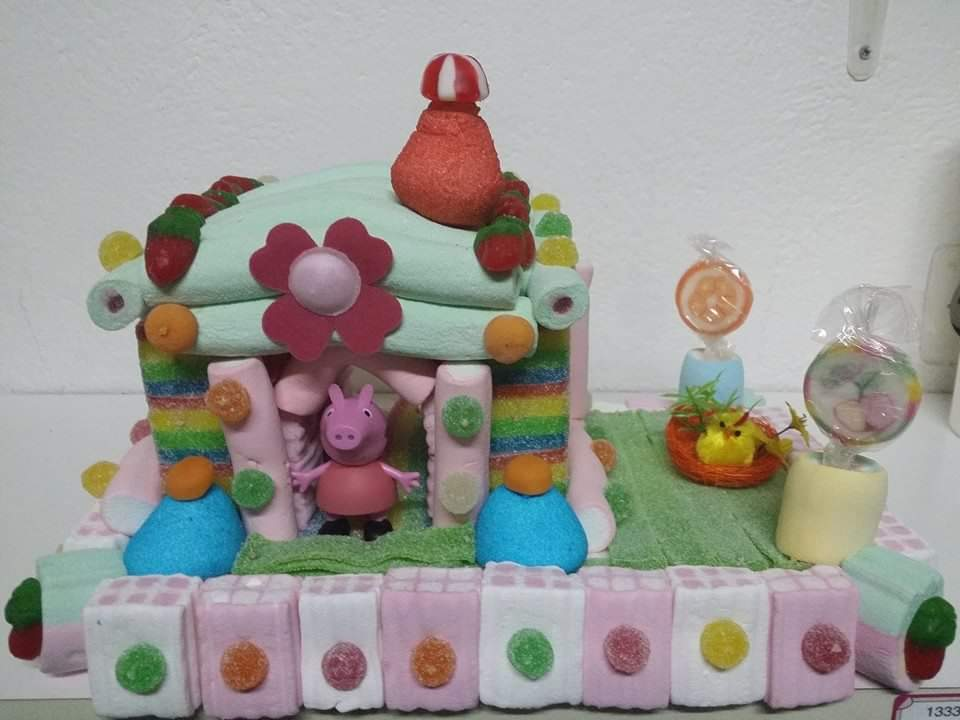
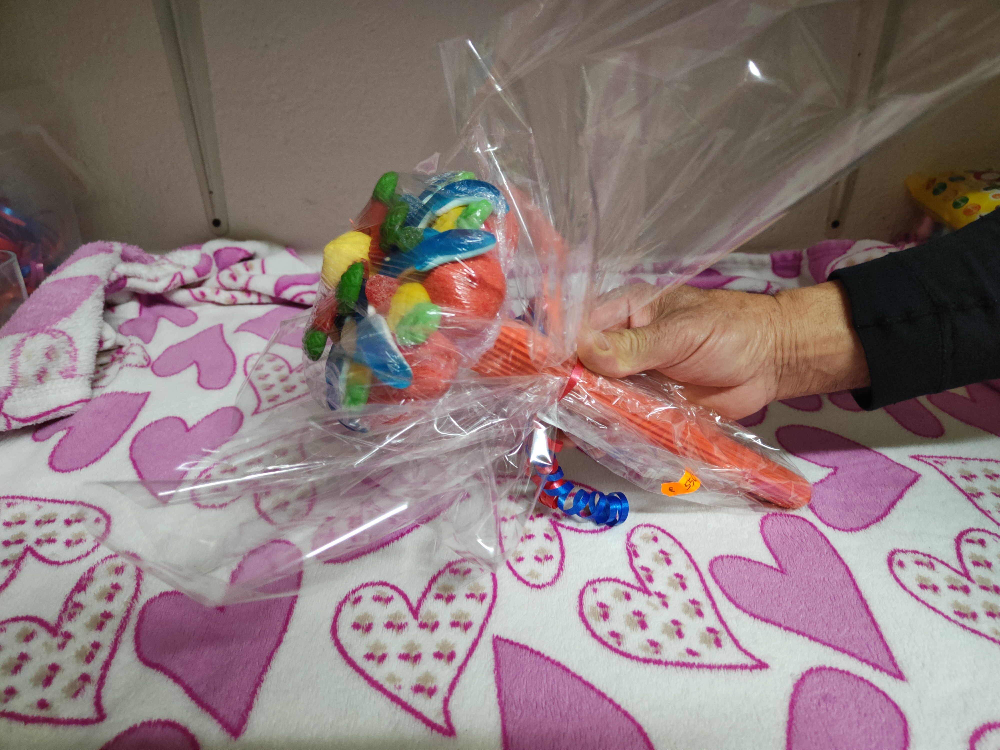
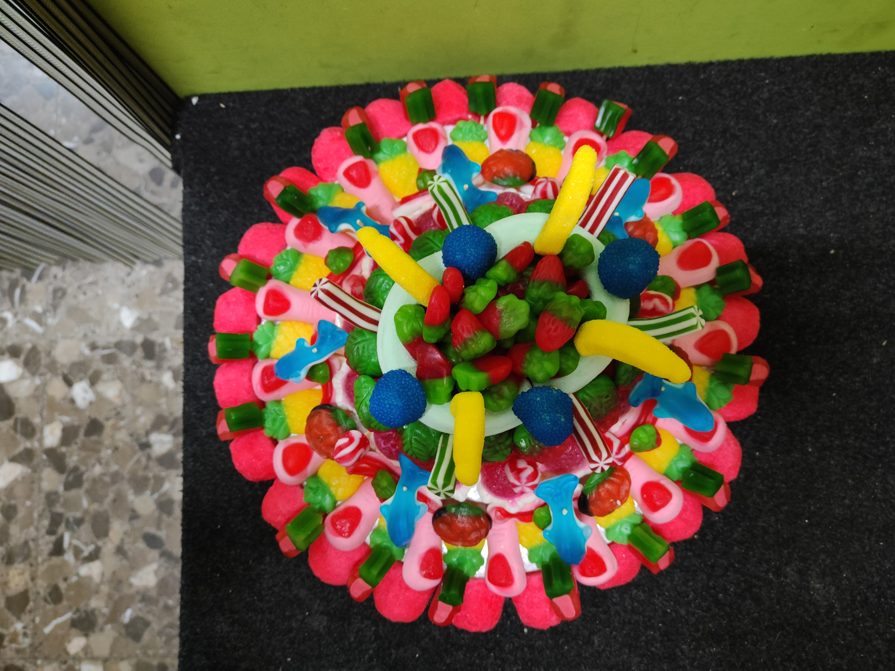
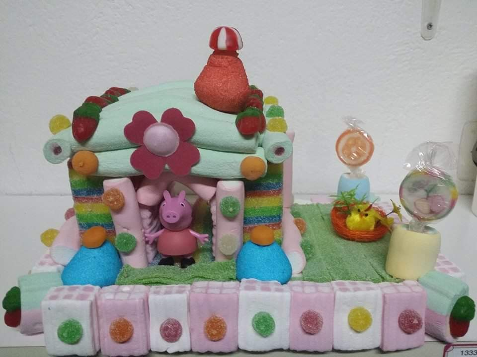
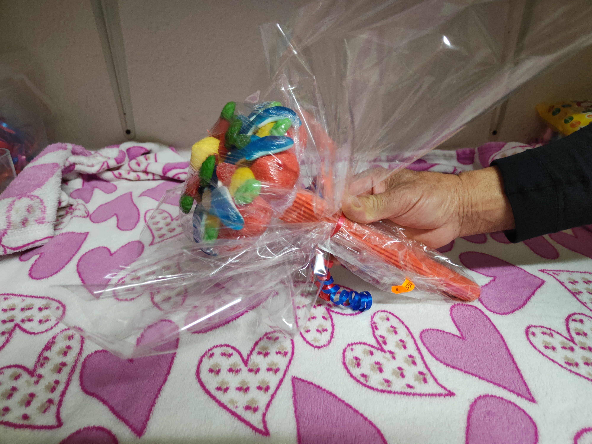

Sobre Llaminadures Mary
Llaminadures Mary se creó en 2008, por lo que lleva más de 13 años ofreciendo las mejores chucherías a toda Pineda de Mar y alrededores, aunque también dispone de snacks, peluches, figuras, verduras y más productos.
Lo más característico de esta tienda sin duda es el trato cercano que ofrece la dueña del negocio, Mary. Es una persona encantadora que es capaz de sacarte una sonrisa por el magnífico trato que mantiene con todos sus clientes.
En caso de que te apetezca reservar cualquier pastel y/o bolsas para eventos especiales, puedes hacerlo desde está página web, en la sección Presupuestos . Así como también poder echar un vistazo a todos los productos que te mostramos en este sitio Web.
¡Gracias por tu visita!